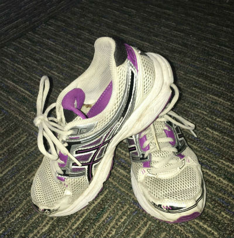
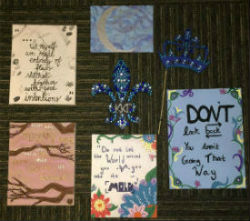
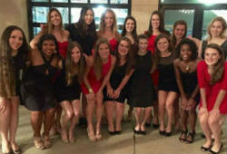
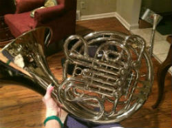

Sports

There are sports for absolutely everyone at WashU! No matter what your level, you can get involved. See what level is right for you.
- Varisty sports can be found here.
- Looking for something less intense but still a team? Try Club Sports.
- Want something just for fun? Intermural sports Intermural Sports may be right for you.
Arts



WashU is FULL of art oppurtunities! Music, photography, painting, you name it, its here.
- Serious about keeping art in your future? The Sam Fox School of Arts may be what youre looking for.
- Music is your passion? WashU Music Department has tons to explore. The University has a multitude of Ensembles, including orchestras, jazz bands, vocal choirs, and more.
- Love singing and love doing it with other people? WashU Acapella is HUGE on campus! Check out each group's page at this directory.
Cultural
Students and professors from all over the world find themselves at WashU. The school loves to celebrate other cultures and traditions through its many Diversity at WashU. There is a group for all cultures, races, interests, sexual orientations, and more!